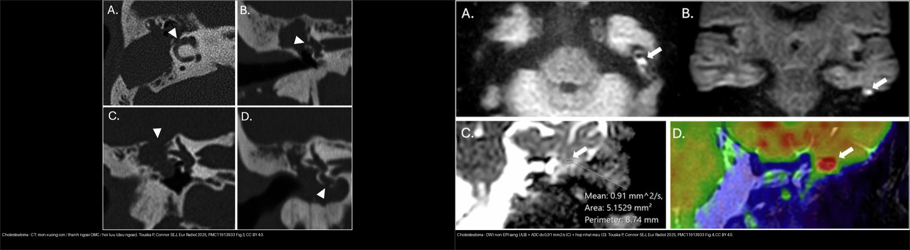
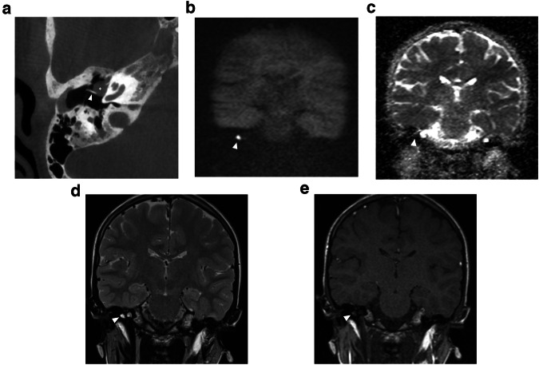
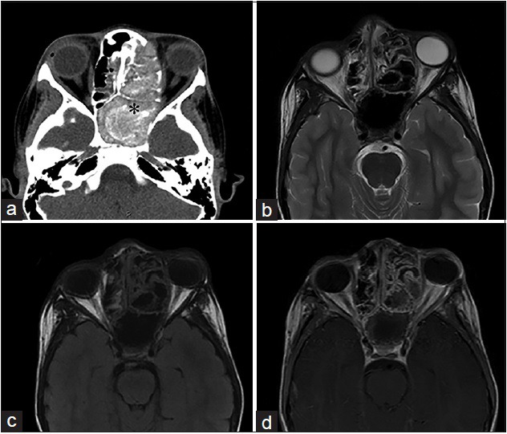
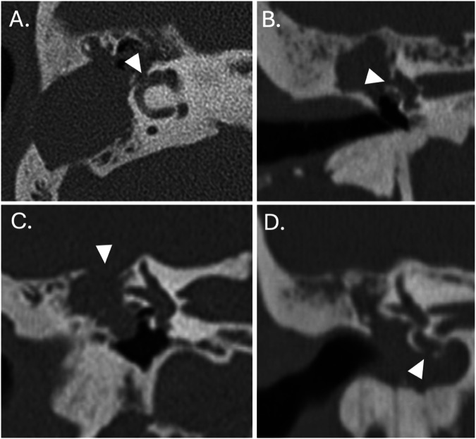
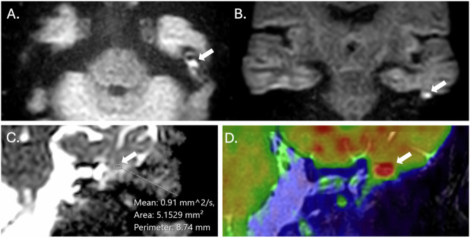
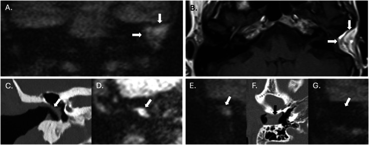

235 — Xương thái dương & xoang: cholesteatoma DWI + nấm vs u / Temporal & Sinuses
Tags: pattern:xuong-thai-duong-xoang vung:dau-mat-co protocol:MRI-non-EPI
Mức chắc chắn (certainty): tổng hợp y văn (literature synthesis) — nhóm tự biên từ y văn mở, chưa gắn ca nguyên văn đơn lẻ.
1. Tổng quan — keratin giữ nước khuếch tán + nấm vôi hóa
- Cholesteatoma: biểu mô sừng (keratin) tích tụ tai giữa-thượng nhĩ — TẠI SAO DWI non-EPI sáng từ ≥ 2–3 mm: keratin đặc hạn chế khuếch tán (ADC điển hình ~0,7–1,0 ×10⁻³ mm²/s; ca Fig. 4 đo được 0,91 mm²/s), trong khi mô hạt/viêm (granulation) DWI tối (non-EPI tránh méo ảnh nền sọ so với EPI).
- Viêm xoang nấm (fungal): vón canxi + kim loại nặng trong chất nhầy dị ứng — TẠI SAO tăng tỷ trọng > 100 HU + vôi trong xoang mờ: oxalate canxi + sắt/mangan của sợi nấm.
- U xoang (K vảy, esthesioneuroblastoma): phá xương + khối mô mềm lan hốc mắt/nền sọ, không vôi kiểu nấm.
2. Gamut chảy tai + mờ xoang (Gamut)
- Thượng nhĩ + mòn xương con + DWI non-EPI sáng: cholesteatoma — mổ tiệt căn + bít.
- Mờ xoang + vôi > 100 HU + không phá xương: nấm — nội soi + dọn xoang.
- Khối xoang + phá xương + lan hốc mắt: u — sinh thiết + PET + mổ/xạ.
- Viêm tai xương chũm + biến chứng nội sọ: áp-xe/tắc xoang — CT + MRI cấp cứu.
3. Bảng so sánh phân biệt (ma trận đối chiếu)
| Thực thể (entity) | Hình ảnh điển hình | Chốt vào (rule-in) | Chốt loại (rule-out) | Gợi ý xác nhận |
|---|---|---|---|---|
| Cholesteatoma | Thượng nhĩ + mòn xương + DWI non-EPI sáng ≥ 2–3 mm | DWI sáng + mòn xương con | DWI tối → mô hạt | CT xương + mổ (theo dõi DWI sau mổ) |
| Nấm xoang | Mờ xoang + vôi > 100 HU + không phá xương + dị ứng | Vôi + IgE/đa polyp | Phá xương + khối → u | Nội soi + mô bệnh |
| U xoang | Khối + phá xương + lan hốc mắt/nền sọ | Phá xương + mô mềm | Vôi + không phá → nấm | Sinh thiết + PET |
| Viêm tai biến chứng | Mờ xương chũm + khuyết tegmen + áp-xe/TM tắc | Khuyết xương + sốt + thần kinh | Không khuyết → viêm đơn thuần | CT + MRI + KS/mổ cấp cứu |

Trái: CT xương thái dương — mòn xương con / thành ngoài / hồi luu (mũi tên nhọn). Phải: DWI non-EPI sáng (A, B) + ADC 0,91 mm²/s (C) + hợp nhất màu (D). Nguồn: Touska P & Connor SEJ, Eur Radiol 2025, PMC11913933 Fig. 3 + 4, CC BY 4.0.
Khối tròn trong tai giữa trước-trên (dấu hoa thị) cạnh cán xương búa: (a) CBCT; (b) DWI b1000 hạn chế khuếch tán; (c) ADC tối; (d) T2; (e) T1 sau cản quang. Nguồn: Vangrinsven G et al., Insights Imaging 2024, PMC11306902 Fig. 1, CC BY 4.0. Mycetoma — CT (a) cửa sổ mô mềm + (b) cửa sổ xương: xoang hàm phải mờ hoàn toàn có mảnh vôi trong tổn thương (mũi tên) + viêm xương phản ứng; (c) T2 khối giảm tín hiệu. Nguồn: Gavito-Higuera J et al., J Clin Imaging Sci 2016, PMC4926542 Fig. 3, CC BY-NC-SA 4.0.
Mycetoma — CT (a) cửa sổ mô mềm + (b) cửa sổ xương: xoang hàm phải mờ hoàn toàn có mảnh vôi trong tổn thương (mũi tên) + viêm xương phản ứng; (c) T2 khối giảm tín hiệu. Nguồn: Gavito-Higuera J et al., J Clin Imaging Sci 2016, PMC4926542 Fig. 3, CC BY-NC-SA 4.0.

Viêm xoang nấm dị ứng — (a) CT không cản quang: mờ xoang sàng-bướm trái với vật chất tăng tỷ trọng trong lòng + giãn/xương lại xoang (dấu hoa thị); (b) T2 + (c) T1: mucin tín hiệu thấp (do kim loại + đạm cao/nước tự do thấp); (d) T1 sau tiêm: niêm mạc viêm ngấm nhưng KHÔNG ngấm lòng xoang. Nguồn: Gavito-Higuera J et al., J Clin Imaging Sci 2016, PMC4926542 Fig. 4, CC BY-NC-SA 4.0.4. Protocol
- CT xương thái dương lát mỏng 0,5 mm + MRI DWI non-EPI (theo dõi tồn dư/tái phát cholesteatoma ≥ 2–3 mm); CT xoang + nội soi khi mờ xoang.
flowchart TD
A[Chảy tai/mờ xoang] --> B{DWI sáng hay vôi?}
B -->|DWI non-EPI sáng + mòn xương| C[Cholesteatoma: mổ]
B -->|Vôi >100HU + không phá xương| D[Nấm: nội soi]
B -->|Phá xương + khối| E[U: sinh thiết]
5. Cạm bẫy
- DWI EPI méo ảnh nền sọ giả âm/dương cholesteatoma nhỏ — non-EPI + ngưỡng 2–3 mm.
- Mỡ/vật liệu ghép sau mổ cũng sáng trên DWI (giả cholesteatoma) — luôn đọc kèm T1W (mỡ sáng) + ADC (mỡ ADC cao) để loại; đừng mổ lại vì một ổ sáng DWI đơn thuần (Ca 3).
- Mô hạt sau mổ DWI tối tưởng khỏi hẳn — theo dõi DWI định kỳ 1–2 năm.
- Nấm xâm lấn (mucor) đái tháo đường phá xương như u — cấp cứu nội soi + amphotericin, đừng chờ sinh thiết.
6. Tự lượng giá — Blind Quiz
Ca 1 — Nam thanh niên chảy tai thối + thượng nhĩ mờ + mòn đe. Đọc CT xương thái dương trước.

- Hỏi: mũi tên nhọn chỉ gì? Mòn xương con/thành ngoài/ồi luu gợi gì? Bước tiếp theo?
Bấm để hiện đáp án (findings + chẩn đoán)
- Dấu hiệu (findings): khối mô mềm vùng thượng nhĩ + mòn xương con / thành ngoài ống tai / hồi luu (mũi tên nhọn, các panel A–D).
- Chẩn đoán (diagnosis): cholesteatoma — mòn xương + khối thượng nhĩ là chốt vào; xác nhận bằng DWI non-EPI (xem Ca 2) và mổ tiệt căn.
- Nguồn: Touska P & Connor SEJ, Eur Radiol 2025, PMC11913933 Fig. 3, CC BY 4.0.
Ca 2 — Cùng bệnh nhân, MRI DWI non-EPI sáng. Đo ADC trước khi mở đáp án.

- Hỏi: DWI sáng nghĩa gì? ADC bao nhiêu? Cholesteatoma hay mô hạt/phân bì mỡ?
Bấm để hiện đáp án (findings + chẩn đoán)
- Dấu hiệu (findings): ổ sáng trên DWI non-EPI (A, B) + ADC trung bình 0,91 mm²/s (C) + hợp nhất màu (D) — keratin đặc hạn chế khuếch tán.
- Chẩn đoán (diagnosis): cholesteatoma — DWI sáng ≥ 2–3 mm + ADC thấp; mô hạt/viêm DWI tối. Đối chiếu CT (Ca 1) để lập bản đồ mòn xương trước mổ.
- Nguồn: Touska P & Connor SEJ, Eur Radiol 2025, PMC11913933 Fig. 4, CC BY 4.0.
Ca 3 — Sau mổ, DWI non-EPI vẫn có ổ sáng lớn trong xương chũm. Tái phát? (cạm bẫy)

- Hỏi: ổ sáng DWI có chắc là cholesteatoma tồn dư? Cần đối chiếu gì?
Bấm để hiện đáp án (findings + chẩn đoán)
- Dấu hiệu (findings): ổ tăng tín hiệu lớn trên HASTE DWI (A) nhưng T1W (B) cho thấy đây là mỡ của vật liệu ghép (fat graft), không phải cholesteatoma.
- Chẩn đoán (diagnosis): giả cholesteatoma — mỡ/vật liệu ghép cũng sáng trên DWI; đọc T1W (và ADC) để loại. DWI non-EPI không dùng một mình trong theo dõi sau mổ.
- Nguồn: Touska P & Connor SEJ, Eur Radiol 2025, PMC11913933 Fig. 7, CC BY 4.0.
Ca 4 — Bệnh nhân mờ xoang hàm, có mảnh tăng tỷ trọng trong lòng. Nấm hay u?
- Hỏi: mũi tên chỉ gì? Có phá xương không? Chẩn đoán và hướng xử trí?
Bấm để hiện đáp án (findings + chẩn đoán)
- Dấu hiệu (findings): xoang hàm phải mờ hoàn toàn với mảnh vôi trong tổn thương (a, b) + viêm xương phản ứng; T2 khối giảm tín hiệu (c).
- Chẩn đoán (diagnosis): mycetoma (bóng nấm) — viêm xoang nấm không xâm lấn; không phá xương kiểu u → nội soi dọn xoang + mô bệnh.
- Nguồn: Gavito-Higuera J et al., J Clin Imaging Sci 2016, PMC4926542 Fig. 3, CC BY-NC-SA 4.0.
Ca 5 — Trẻ 11 tuổi sưng mắt trái, CT thấy vật chất tăng tỷ trọng trong xoang sàng-bướm:
Bấm để hiện đáp án (findings + chẩn đoán)
- Dấu hiệu (findings): (a) CT không cản quang — mờ xoang sàng-bướm trái với vật chất tăng tỷ trọng trong lòng + giãn/xương lại xoang; (b) T2 + (c) T1 — mucin tín hiệu thấp (kim loại + đạm cao/nước tự do thấp); (d) T1 sau tiêm — niêm mạc viêm ngấm, lòng xoang không ngấm.
- Chẩn đoán (diagnosis): viêm xoang nấm dị ứng (allergic fungal sinusitis) — vôi/tăng tỷ trọng > 100 HU + không phá xương; "không ngấm lòng xoang" giúp loại u. Xử trí: nội soi dọn xoang + corticoid.
- Nguồn: Gavito-Higuera J et al., J Clin Imaging Sci 2016, PMC4926542 Fig. 4, CC BY-NC-SA 4.0.
Ca 6 — Trẻ có bất thường tai giữa, DWI hạn chế khuếch tán (đọc theo chuỗi a→e):
Bấm để hiện đáp án (findings + chẩn đoán)
- Dấu hiệu (findings): khối đặc trong tai giữa trước-trên (dấu hoa thị) cạnh cán xương búa — CBCT (a); DWI hạn chế khuếch tán (b) + ADC tối (c); T2 (d); T1 sau tiêm (e).
- Chẩn đoán (diagnosis): cholesteatoma bẩm sinh (khối sau màng nhĩ nguyên vẹn + hạn chế khuếch tán) — phân biệt viêm tai tiết dịch (DWI tối); mổ bảo tồn xương con khi có thể.
- Nguồn: Vangrinsven G et al., Insights Imaging 2024, PMC11306902 Fig. 1, CC BY 4.0.
Bài liên quan chéo
- 200 – Tổng quan Thần kinh
- 217 – Ngoài trục CPA (lan nền sọ-hố sau)
- 230 – Tuyến giáp & hạch cổ (đầu-mặt-cổ)
- 720 – Xương thái dương & cholesteatoma (chi tiết chuỗi xung)
- 715 – Viêm xoang & nấm xâm lấn (nấm xoang cấp/mạn)
Không dùng để chẩn đoán độc lập khi chưa có người hướng dẫn.